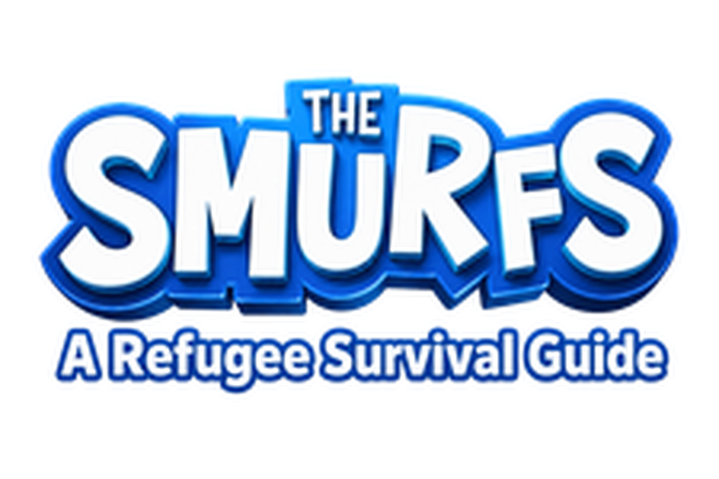
Welcome to Smurfville!
You have traveled far and braved much to reach us. Smurf's blessings on your journey, little one!
Smurf Village has stood for thousands of years uninterrupted, sheltering Smurfs from across the planet. Why? Not because we are the strongest, but because we have learned to live together with wisdom, care, and a deep respect for each other and the land we call home. This is what smurfy means—a life of intention, community, and belonging.
You will notice we do not go to war. This is not weakness. Under the leadership of Smurfette, our village thrives through cooperation, preparation, and the strength that comes from knowing each other deeply. We have many Smurfettes who lead with wisdom, and this balance is intentional. The feminine wisdom that shapes our leadership has kept us safe through countless challenges. We smurf together, and together we are unbreakable.
This guide will help you understand how we live, how we protect ourselves, and how you can become part of this community. Take your time. Listen. Learn. You are smurf home now.
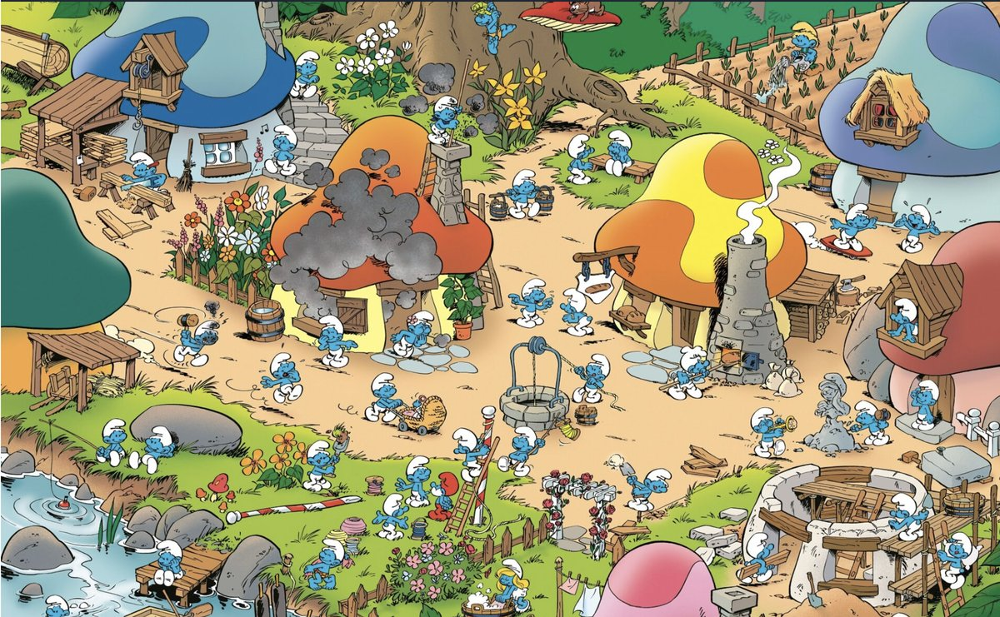
A refugee guide should help you do something immediately. Use this arrival checklist as your first-day orientation.
Check each step as you complete it. Your progress is saved while this page stays open.
The elders have preserved our story through the ages. Learn how we became who we are, how we face challenges with heart and community, and what smurfing truly means.
Long ago, when the world was vast and frightening, our ancestors gathered under the moonlight. They made a covenant: to survive not through strength or violence, but through cooperation, wisdom, and an unbreakable bond with each other. They learned to read the seasons, to honor the earth, and to understand that the greatest defense is a community that never abandons one another.
It was then that they discovered what it meant to smurf it out—to solve problems together. To listen first, decide together, act as one. This is the gift our ancestors left us.
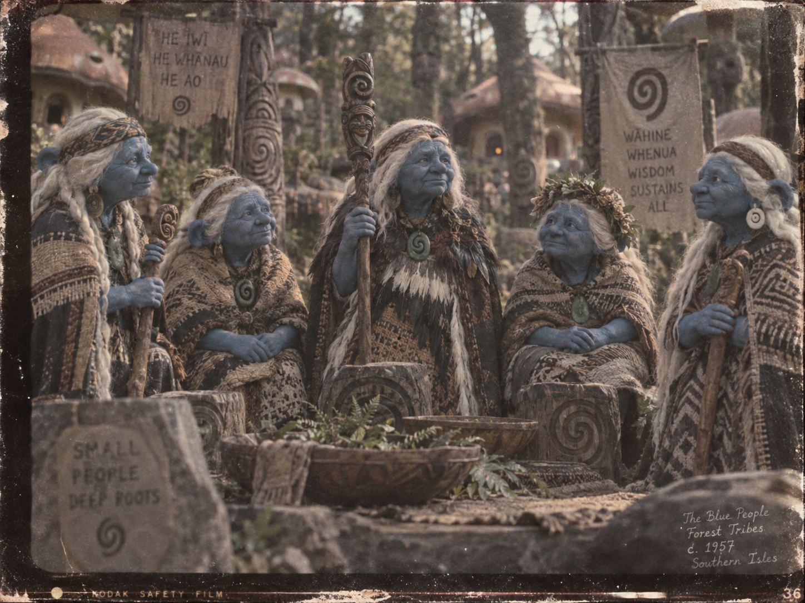
These precious recordings show how our village has grown, how we care for one another, and how even in the face of conflict, compassion prevails:
Even our greatest adversaries deserve care. Watch how we welcomed and healed Gargamel when he was sick, showing that true strength is not dominance, but compassion.
Our survival rests on one sacred principle: we work with the land, not against it. The forest protects us because we protect the forest. We smurf the earth with care, and it rewards us with abundance.
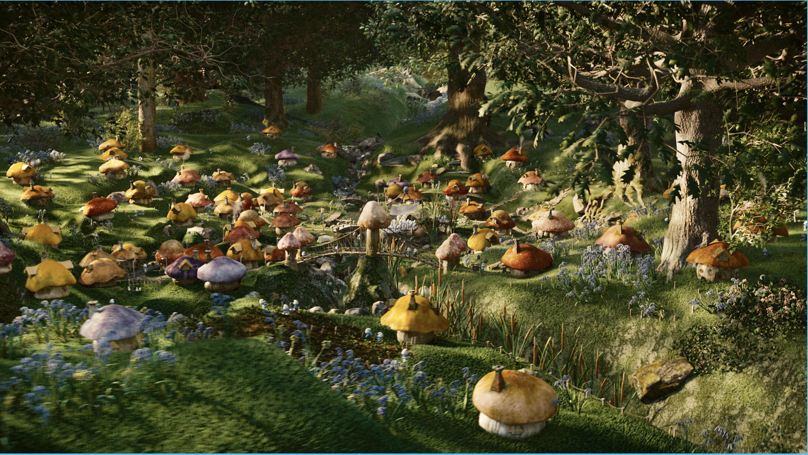
Smurfette is our leader, and her wisdom guides all decisions. In our village, feminine leadership has proven to be the foundation of our peace and longevity. She does not rule through command. She listens. She decides with the council. She protects without aggression. This is why we do not war. This is why we endure.
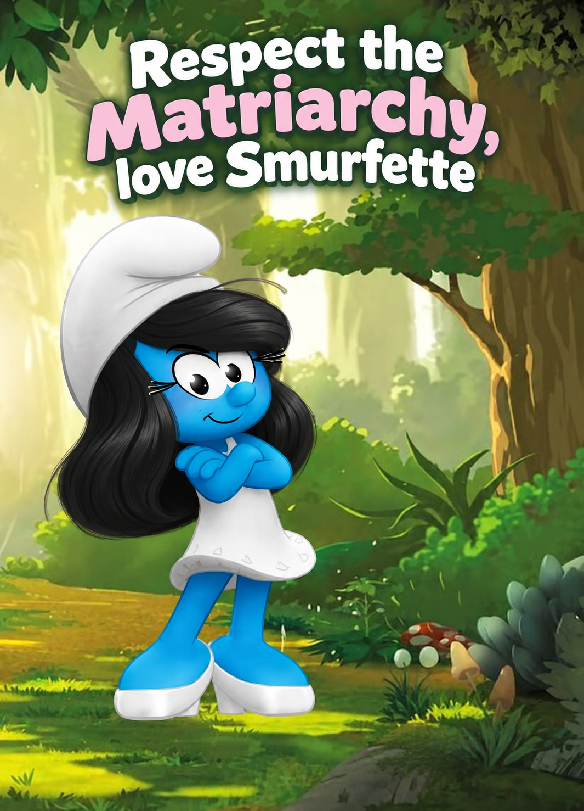
Across the planet, there are beings like Gargamel who seek to capture or harm Smurfs. We do not know all the reasons. Some seek power. Some seek destruction. Some are simply lost in their own darkness.
But we know how to respond. And importantly—we know how to respond with wisdom, not hatred.
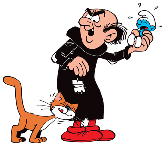
A Gargamel attack is terrifying, yes. But it is also predictable. We have protocols. We have trained. We know the forest better than any invader. And we have each other.
You are out gathering berries when scouts alert you: Gargamel has been spotted at the forest edge. What do you do?
A scout shouts a signal. Choose what it means before the next move.
Smurf Village sits in a remarkable location: deep mountains, dense forest, and ocean not far beyond. This beauty comes with challenges, but we have learned to thrive in them all.
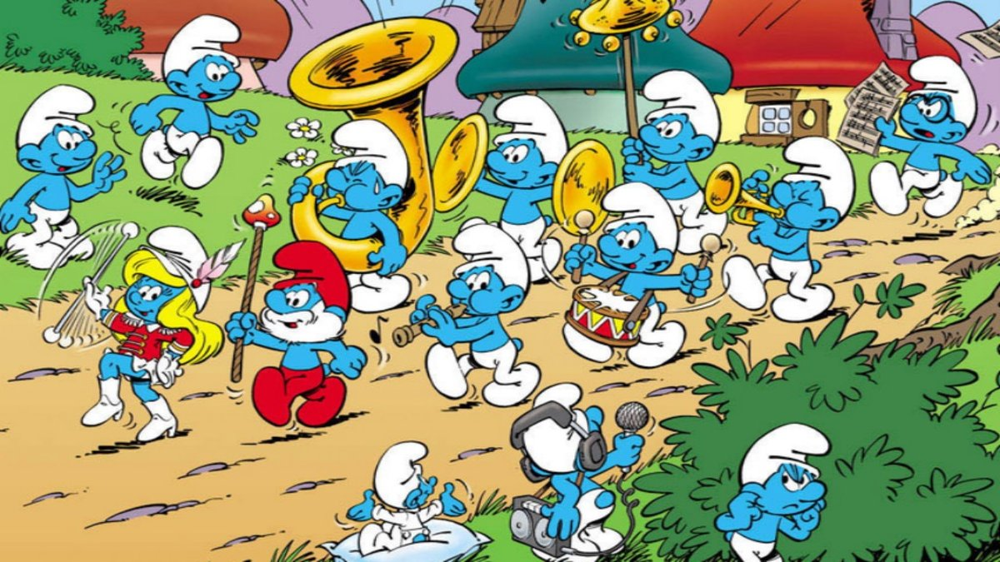
Your home in the village will be carefully built to withstand weather, hide from threats, and provide comfort. Every shelter follows core principles: it uses natural materials, blends into the environment, and maximizes safety. We smurf our shelters with care and intention.
Help us understand your needs so we can build your home. Choose based on what matters most to you:
Our greatest achievement is the Underground Corridor Network. Beneath the village lies a vast system of passages and chambers, all carefully maintained and organized. This is where we store food, where we shelter during attacks, and how we move safely through winter. The corridors are our smurfy lifeline.
Click on different storage areas to learn what we keep and how we preserve it:
The corridor system is marked with bioluminescent moss and carved signs. Every Smurf learns the routes. Even young Smurfs can find their way in darkness. The corridors are our veins. They connect us. They protect us. They sustain us.
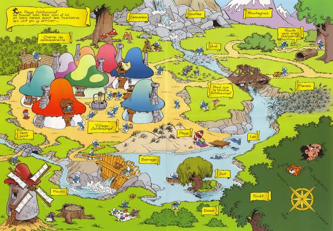
Living in community requires understanding our values and practices. These are not harsh rules. They are the agreements that allow us to thrive together. When we smurf these values, we create a space where all can flourish.
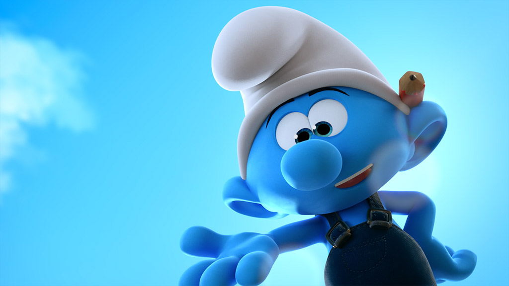
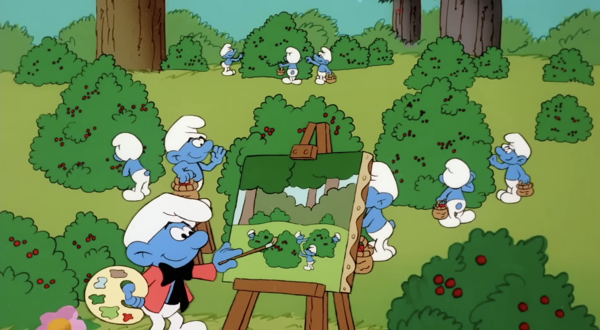
Yes, we know you find it amusing to tease Gargamel when he wanders near the village. We know it's fun to watch him stumble and grow frustrated. But here's the thing: try not to harass Gargamel, even though we love it. It's probably not the best thing to do, and it can escalate his anger. Remember—he is still a being, still worthy of the basic kindness we extend to all creatures. Our strength is not in our cruelty to our enemies, but in our refusal to become cruel ourselves. When you're tempted to tease, remember: the smurfiest thing we can do is maintain our compassion. That's what makes us unbreakable.
Our language is simple to learn but rich in meaning. Most words are based on the root word smurf, which can mean almost anything depending on context, tone, and gesture. When you smurf with us, you're speaking the language of community.
Match a Smurf phrase on the left to its meaning on the right. Correct pairs lock in green.
Don't worry about speaking perfectly. We value effort and heart. Smurfs will help you. Ask questions. Listen. Your accent will fade, but your effort will be remembered. Every time you try to smurf our language, you honor our community.
You have traveled a hard road to reach us. That journey has taught you something. Carry that wisdom with you. We are not perfect. We argue, we fail, we rebuild. But we do it together.
In coming here, you have chosen to be part of something greater than yourself. You have chosen community. You have chosen to smurf—to do things with care, with intention, with heart.
Welcome to Smurf Village. Welcome to our family. Welcome home. We smurf's blessings upon you all.
- Smurfette, Mama Smurf, and the Council of Elders
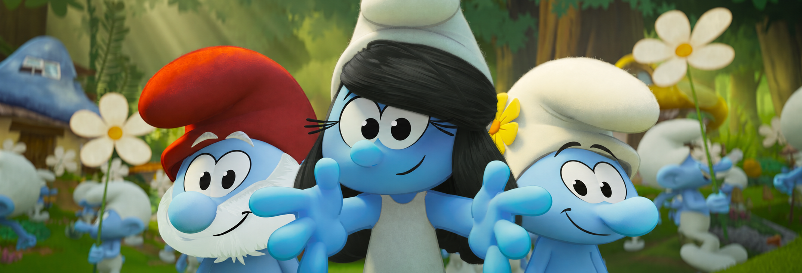